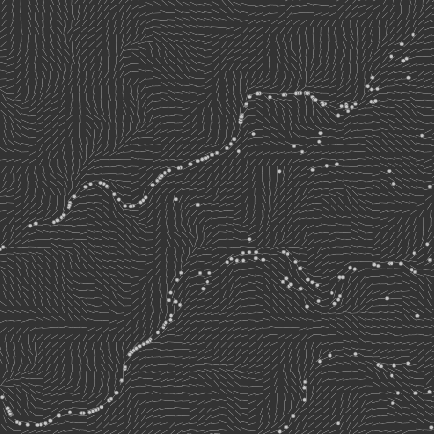

This version was also based on the idea from Daniel Shiffman, but authored by Hirnschall Sebastian, then further modified by me.
The flowfield concept is the same but Sebastian was able to add particles as a function called every draw loop. The velocity is determined by sine, cosine and noise.
The main difference from my implementation is that this flowfield is static, but changes on every reload due to the noise function. I think this is okay since my data is also static. The next step would be to introduce the colour changing particles idea - a particle lights up if on its iteration, the datapoint at that index is above a certain amount.